Portfolio Process
brainstorming&Mindmap
저와 포트폴리오에 대해 떠오르는 생각들을 자유롭게 표현하였습니다.

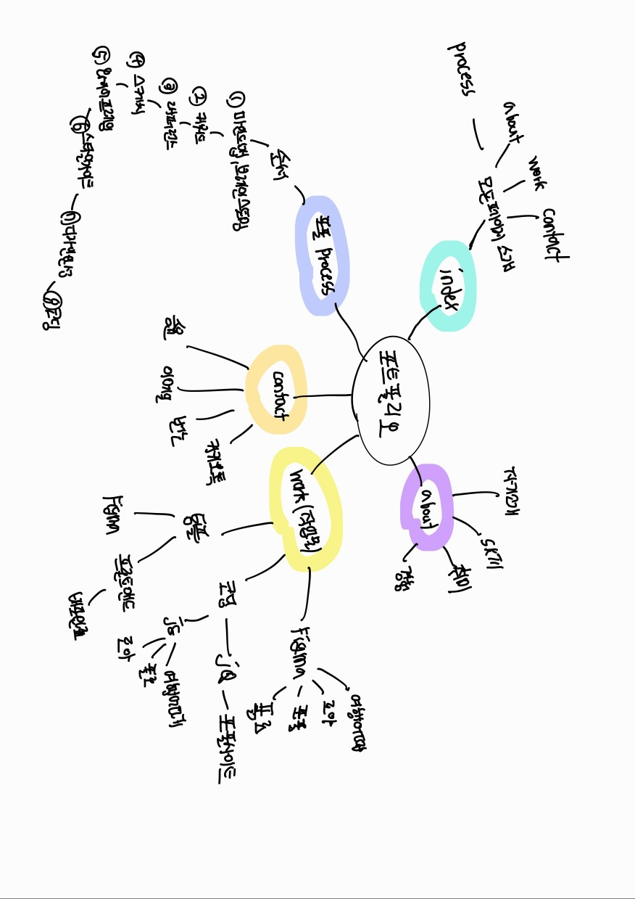
Reference
포트폴리오를 작업하고 디자인하는데 영감을 준 레퍼런스입니다.
- 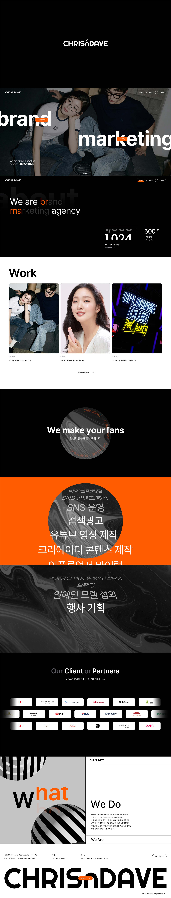
- 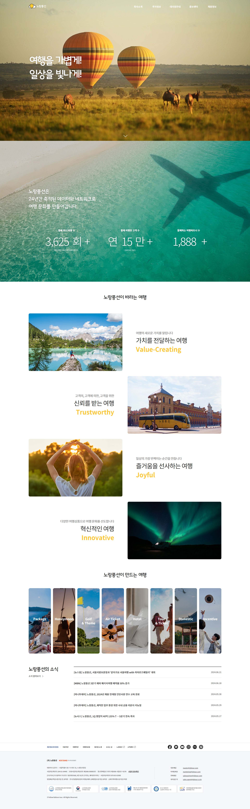
- 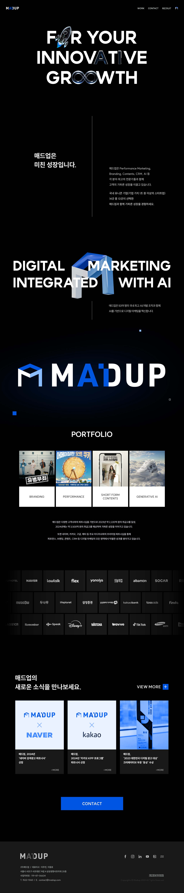
- 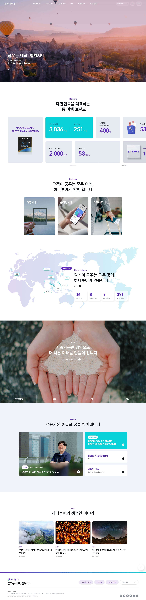
Deconstructing interaction
포트폴리오를 보여주는 작업 흐름을 시각적으로 나타냈습니다.
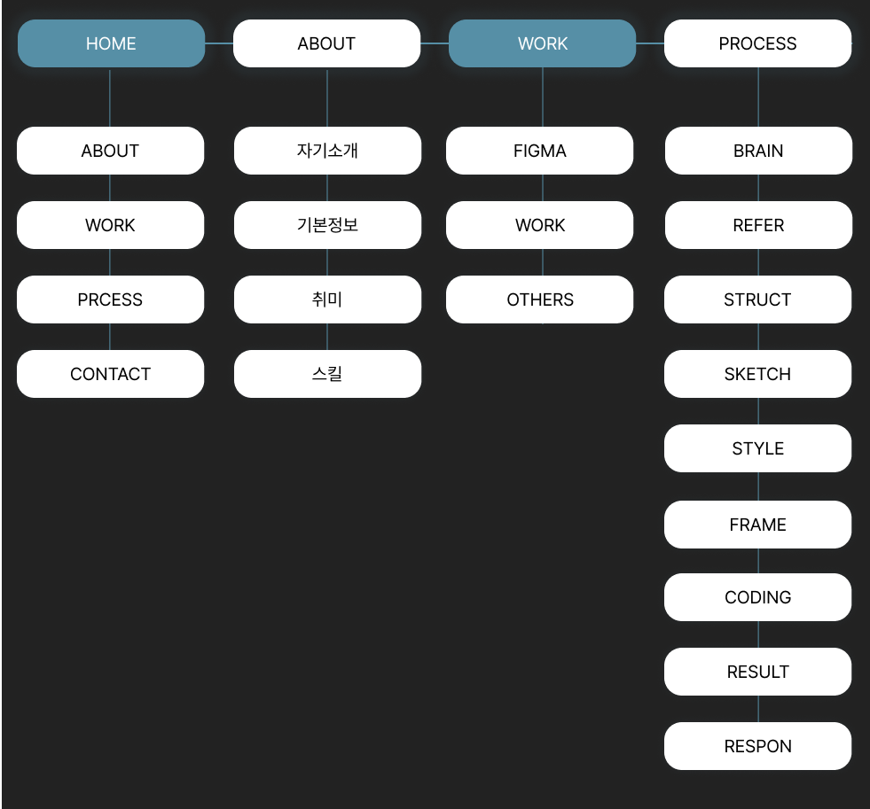
Idea Skectch
포트폴리오를 어떻게 구상하고 싶은지 떠오르는 아이디어를 자유롭게 표현하였습니다
Style Guide
포트폴리오를 위해 스타일 가이드를 작성하였습니다.
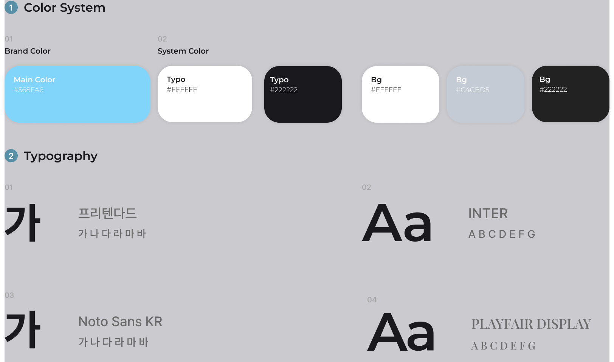
Wire Frame
각 페이지마다 정확한 구도를 잡고 어떤 내용을 넣을지 구상하였습니다.
- 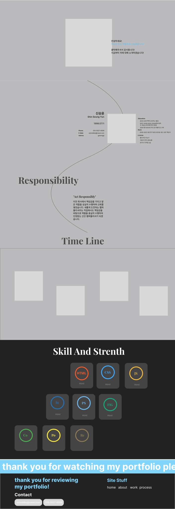
- 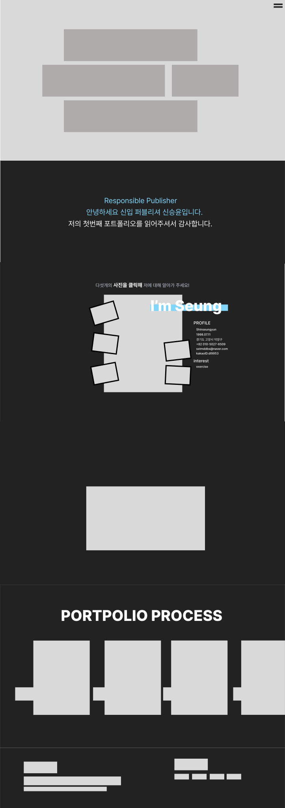
- 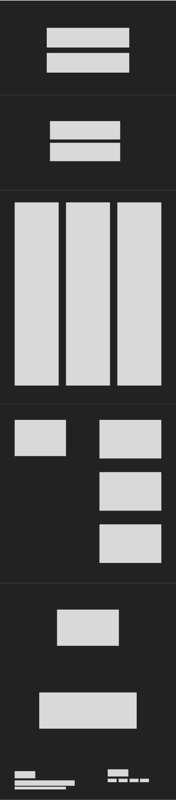
-

Coding
포트폴리오의 전체 페이지를 직접 코딩하여 제작했습니다.
Result Page
직접 디자인하고 코딩한 결과물들 입니다.
Index Page
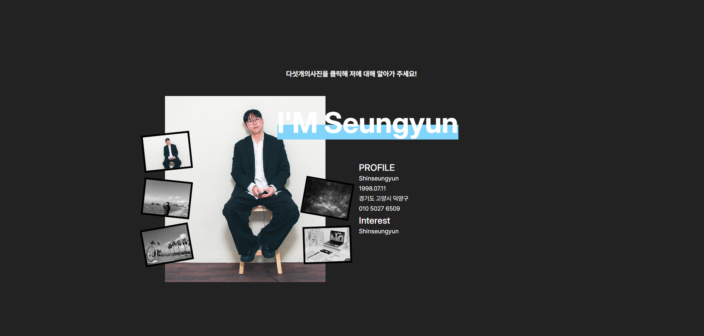
About Page
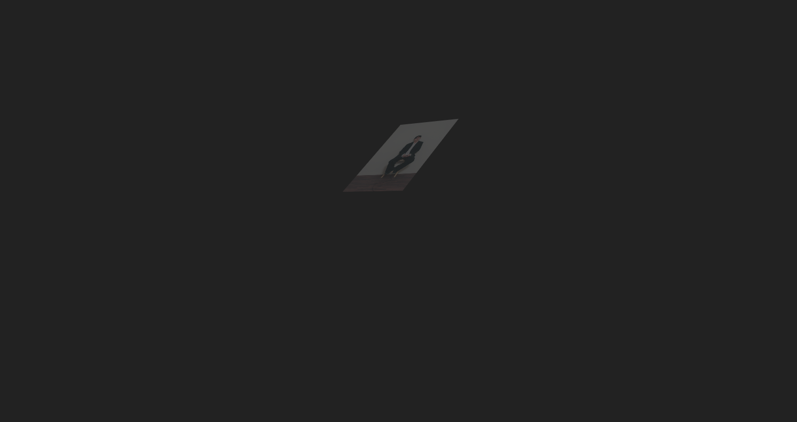
Work Page
Process Page
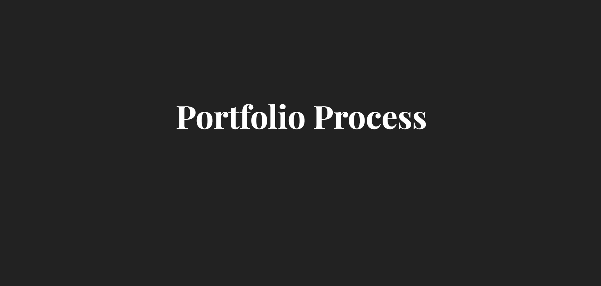
Responsive Coding
모든 반응형을 직접 구현하였습니다.
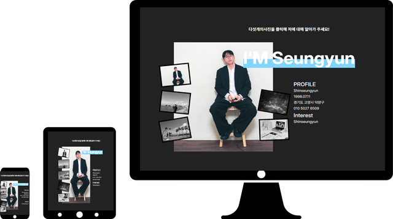